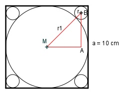

Aufgabe 134 Wie groß ist der Radius r der kleinen Kreise?

a Radius r1 = --- = 5 cm 2 Satz von Pythagoras im Dreieck MAB: a a (r1 + r)2 = (--- - r)2 + (--- - r)2 2 2 (5 + r)2 = 2 * (5 – r)2 25 + 10r + r2 = 2*(25 – 10r + r2) 25 + 10r + r2 = 50 – 20r + 2r2 |-r2 25 + 10r = 50 – 20r + r2 |-10r 25 = 50 – 30r + r2 | -25 r2 - 30r + 25 = 0 p = -30 ; q = 25 x1,2 = x1,2 = 15 ± x1,2 = 15 ± r1,2 = 15 ± 14,1 r1 = 15 + 14,1 = 29,1 cm keine Lösung, ist größer als a r2 = 15 – 14,1 = 0,9 cm